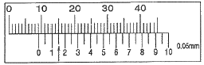
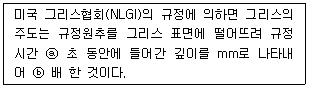
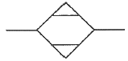
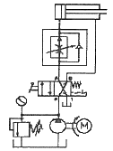

설비보전기사(구) (2016-05-08 기출문제)
1과목: 설비 진단 및 계측
1. 진동 차단기의 기본 요구조건으로 틀린 것은?
- 강성이 충분히 커서 차단능력이 있어야 한다.
- 걸어준 하중을 충분히 견딜 수 있어야 한다.
- 온도, 습도, 화학적 변화 등에 의해 견딜 수 있어야 한다.
- 차단하려는 진동의 최저 주파수보다 작은 고유 진동수를 가져야 한다.
(정답률: 72%)

2. 자계의 방향이나 강도를 측정할 수 있는 자기 센서는?
- 홀 센서(hall sensor)
- 서미스터(thermistor)
- 서모파일(thermopile)
- 포토 다이오드(photo diode)
(정답률: 84%)
3. 정현파 신호에서 진동의 크기를 표현할 것 중 옳은 것은?
- 피크-피크값(양진폭)은 실효값의 2배이다.
- 피크값(편진폭)은 진동량의 절대값 중 최소값이다.
- 실효값은 진동 에너지를 표현하는데 적합하며 피크 값의 약 0.7배이다.
- 평균값은 진동량을 평균한 값으로서 피크값의 1/√2배이다.
(정답률: 82%)
4. 프로세스제어에서 온도제어와 유량제어에 대한 설명 중 옳은 것은?
- 유량제어는 검출부의 응답지연이 있다.
- 온도제어는 전송부의 응답지연이 없다.
- 유량제어는 전송부의 응답지연이 있다.
- 온도제어는 검출부의 응답지연이 있다.
(정답률: 66%)
5. 저항측정에 주로 사용되는 회로는?
- 열전대 회로
- 포텐셔 미터 회로
- 휘트스톤 브리지 회로
- 부자식 레벨 센서 회로
(정답률: 80%)
6. 진동현상을 설명하기 위해 사용하는 진동계의 기본요소가 아닌 것은?
- 감쇠
- 질량
- 고유진동수
- 스프링(강성)
(정답률: 56%)
7. 다음 중 신호변환기의 기능이 아닌 것은?
- 필터링
- 비 선형화
- 신호레벨 변환
- 신호형태 변환
(정답률: 72%)
8. 회전기계의 언밸런스인 경우 나타나는 진동특성과 대처방안이 아닌 것은?
- 수평, 수직방향에서 최대의 진폭이 발생한다.
- 수집된 진동신호는 포락선 처리 후 분석을 실시한다.
- 회전 주파수의 1f 성분에서 탁월 주파수가 나타난다.
- 언밸런스양과 회전수가 증가할수록 진동값이 높게 나타난다.
(정답률: 61%)
9. 소음의 물리적 성질에 대한 설명 중 틀린 것은?
- 음의 진행방향을 나타내는 음선은 파면에 수평이다.
- 파동의 위상이 같은 점들을 연결한 면은 파면이라고 한다.
- 음파는 매질 개개의 입자가 파동이 진행하는 방향의 앞뒤로 진동하는 종파이다.
- 파동은 매질 자체가 이동하는 것이 아닌 매질의 변형 운동으로 이루어지는 에너지 전달이다.
(정답률: 62%)
10. 다음 중 변위센서 종류가 아닌 것은?
- 와전류식
- 압전방식
- 전자광학식
- 정전용량식
(정답률: 60%)
11. 오일분석법 중 채취한 오일 샘플링을 용제로 희석하고 자석에 의하여 검출된 마모입자의 크기, 형상 및 재질 등을 분석하여 이상 원인을 규명하는 설비진단기법은?
- 원자흡광법
- 회전전극법
- 페로그래피법
- 오일 SOAP법
(정답률: 59%)
12. 조작부의 구비 조건 중 제어신호에 관한 설명으로 틀린 것은?
- 응답성이 좋을 것
- 재현성이 좋을 것
- 히스테리시스가 클 것
- 직선성의 특성을 가질 것
(정답률: 88%)
13. 2개 진동체의 고유진동수가 같을 때, 한쪽을 울리면 다른 쪽도 울리는 현상은?
- 난류
- 맥동
- 방사
- 공명
(정답률: 86%)
14. 축의 회전수가 일정할 때 기어에 손상이 있을 경우 가장 높은 주파수를 발생시키는 기어는?
- 피치원의 지름이 50mm 이고 기어의 잇수가 30개인 기어
- 피치원의 지름이 60mm 이고 기어의 잇수가 60개인 기어
- 피치원의 지름이 70mm 이고 기어의 잇수가 50개인 기어
- 피치원의 지름이 80mm 이고 기어의 잇수가 40개인 기어
(정답률: 76%)
15. 장애물 뒤쪽으로 음에너지가 확산되는 현상은?
- 음의 간섭
- 음의 굴절
- 음의 반사
- 음의 회절
(정답률: 82%)
16. 설비진단 기술 도입의 일반적인 효과가 아닌 것은?
- 경향관리를 실행함으로써 설비의 수명을 예측하는 것이 가능하다.
- 중요설비, 부위를 상시 감시함에 따라 돌발적인 증대 고장 방지가 가능해진다.
- 정밀진단을 통해서 설비관리가 이루어지므로 오버홀(overhaul)의 횟수가 증가하게 된다.
- 점검원의 경험과 진단기기를 사용하면 보다 정량화 할 수 있어 누구라도 능숙하게 되면 설비의 이상 상태 판단이 가능해진다.
(정답률: 86%)
17. 다음 중 진동차단기로 이용되는 패드에 사용하지 않는 재질은?
- 코르크
- 강철 스프링
- 스펀지 고무
- 파이버 글라스
(정답률: 78%)
18. 센서에 대한 설명 중 틀린 것은?
- 속도 센서는 동전형 속도센서가 널리 사용되며 측정 주파수 범위는 보통 1Hz~100Hz이다.
- 진동 측정용 픽업은 가속도 검출형, 속도 검출형, 변위 검출형으로 구별되며 변위 검출형은 비접촉으로 사용된다.
- 가속도 센서로서 현재 널리 사용되고 있는 것은 압전형(piezo electric type) 가속도 센서이며, 이것은 주파수 범위의 광대역, 소형 경량화, 사용온도 범위가 넓다.
- 변위 센서는 와전류식, 전자 광학식, 정전용량식 등이 있으며, 축의 운동과 같이 직선관계 측정 시 고감도 오실레이터는 와전류형 변위센서가 사용된다.
(정답률: 67%)
19. 도전성의 물체가 자계 속을 움직여 발생하는 기전력을 이용하여 도전성 유체의 유량을 측정하는 유량계는?
- 전자 유량계
- 와류식 유량계
- 초음파식 유량계
- 정전 용량식 유량계
(정답률: 58%)
20. 열전대 종류 중 내열성이 좋고 산화성 분위기 중에서도 강하며, 대개 1000℃ 이상에서 사용되는 것은?
- J type
- K type
- T type
- R type
(정답률: 71%)
2과목: 설비관리
21. 설비대장이 구비해야 할 조건으로 가장 거리가 먼 것은?
- 설비의 설치 장소
- 설비 구입자 및 설치자
- 설비에 대한 개략적인 기능
- 설비에 대한 개략적인 크기
(정답률: 83%)
22. 다음 중 TPM의 목표로 가장 적당한 것은?
- 고장 제로
- 불량 제로
- 예방 보전
- 현장 체질 개선
(정답률: 61%)
23. 설비보전시스템 체계도를 구성할 때, 가장 먼저 고려할 사항은?
- 표준설정
- 보전계획
- 생산계획
- 보전예방
(정답률: 62%)
24. 다음 중 설비보전에 강한 작업자의 요구능력이 아닌 것은?
- 외주 발주 능력
- 수리할 수 있는 능력
- 설비의 이상 발견과 개선능력
- 설비와 품질 관계를 이해하고 품질 이상의 예지와 원인 발견 능력
(정답률: 85%)
25. 설비보전 효과를 측정하는 식으로 틀린 것은?
- 제품 단위당 보전비 = 생산량 + 생산비
- 고장 도수율 = 고장 횟수 ÷ 부하시간 × 100
- 설비 가동률 = (가동시간 ÷ 부하시간) × 100
- 고장 강도율 = (고장 정지시간 ÷ 부하시간) × 100
(정답률: 68%)
26. 공장의 에너지 관리 중 열관리의 방법에 해당되지 않는 것은?
- 연료의 관리
- 연소의 관리
- 열변환의 관리
- 열설비의 관리
(정답률: 64%)
27. 다음 중 설비관리의 활동이 아닌 것은?
- 설비자산의 효율적 관리
- 원가절감을 위한 경영활동
- 설계가 끝난 설비의 사용 중의 보전도 유지를 포함한 생산 보전 활동
- 기존 설비 또는 신규 개발이나 구매되는 설비의 설계와 연계되는 보전도 향상
(정답률: 75%)
28. 계측기 선정방법을 설명한 것 중 가장 거리가 먼 것은?
- 계측목적에 대응해서 적합한 것을 선정
- 계측기의 설계자 및 디자이너를 보고 선정
- 여러 종류의 변수를 측정하기에 적합한 것을 선정
- 계측대상의 사용 조건, 환경 조건 등에 대해서 적당한 계측기를 선정
(정답률: 87%)
29. 설비보전 조직형태 중 집중보전의 장점이 아닌 것은?
- 보전요원의 관리감독이 용이하다.
- 보전 작업에 필요한 인원의 동원이 용이하다.
- 특수 기능자를 효과적으로 이용할 수 있다.
- 긴급 작업이나 새로운 작업 시 신속히 처리할 수 있다.
(정답률: 63%)
30. 다음 중 TPM의 다섯 가지 활동이 아닌 것은?
- 설비의 효율화를 위한 개선 활동
- 자주적 대집단 활동을 통해 PM추진
- 최고 경영층부터 제일선까지 전원 참가
- 설비에 관계하는 사람이 빠짐없이 활동
(정답률: 71%)
31. 다음 중 기능별(공정별) 배치의 관한 설명으로 틀린 것은?
- 다품종 소량 생산에 알맞은 배치형식이다.
- 동일 공정 또는 기계가 한 장소에 모여진 형태이다.
- 작업 흐름이 거의 없고, 생산 기간이 길어 재고 발생이 많다.
- 절차 계획, 일정 계획, 재고 관리, 운반 관리 등의 지원이 필요하다.
(정답률: 72%)
32. 설비의 경제성을 평가하는 데 있어서 비용비교법의 하나인 평균 이자법에서 연간비용은 어떻게 산출하는가?
- 연간비용=가동비+평균이자-상각비
- 연간비용=가동비+상각비-평균이자
- 연간비용=가동비-평균이자-상각비
- 연간비용=가동비+평균이자+상각비
(정답률: 78%)
33. 어떤 특정 환경과 운전 조건 하에서 어느 주어진 시점 동안 명시된 특정 기능을 성공적으로 수행할 수 있는 확률을 무엇이라 하는가?
- 효용성
- 신뢰성
- 유용성
- 생산성
(정답률: 77%)
34. 설비나 시스템의 효율을 극대화하기 위한 개별개선 활동에서 가장 첫 번째로 수행하는 것은?
- 개선안 수립
- 중점설비 선정
- 로스의 영향 분석
- 로스의 정량적 측정
(정답률: 79%)
35. 공정에서 취한 계량치 데이터가 여러 개 있을 때 데이터가 어떤 값을 중심으로 어떤 모습으로 산포하고 있는가를 조사하는데 사용하는 것은?
- 관리도
- 파레토도
- 체크시트
- 히스토그램
(정답률: 72%)
36. 설비의 성능 유지 및 이용에 관한 활동을 무엇이라고 하는가?
- 공사 관리
- 품질 관리
- 설비 보전
- 설비 배치
(정답률: 83%)
37. 공장 계측관리에서 계측화 목적이 아닌 것은?
- 자주 보전
- 설비 보전
- 공정 작업의 기술적 관리
- 생산 공정의 기술적 해석
(정답률: 54%)
38. 치공구 관리 기능에서 보전 단계가 아닌 것은?
- 공구의 검사
- 공구의 연구 시험
- 공구의 보관과 공급
- 공구의 제작 및 수리
(정답률: 73%)
39. 주문점에 해당하는 양만큼을 복수로 포장해 두고, 차츰 소비되어 다음 포장을 풀 때에 발주하는 방식은?
- 정수형
- 포장법
- 정량 유지 방식
- 정기 발주 방식
(정답률: 78%)
40. 설비의 갱신이나 개조에 의한 경비절감을 목적으로 하는 프로젝트를 무엇이라 하는가?
- 확장 투자
- 제품 투자
- 전략적 투자
- 합리적 투자
(정답률: 78%)
3과목: 기계일반 및 기계보전
41. 다음 그림의 화살표로 지시한 버니어캘리퍼스 측정값을 얼마인가?

- 9mm
- 9.1mm
- 9.15mm
- 15mm
(정답률: 83%)
42. 두 축이 만나는 각이 수시로 변화하는 경우에 사용되는 커플링으로 공작기계, 자동차 등의 축이음에 많이 사용되는 것은?
- 유니버셜 조인트
- 마찰 원통 커플링
- 플랜지 플렉시블 커플링
- 그리드 플렉시블 커플링
(정답률: 70%)
43. 다음 펌프의 효율식 중 옳은 것은?
- 수력효율 = 수동력/축동력
- 기계효율 = 축동력-기계손실 / 축동력
- 체적효율 = 펌프의 실제양정 / 이론 양정(깃수유한)
- 펌프의 전 효율 = 펌프의 실제유량 / 임펠러를 지나는 유량
(정답률: 60%)
44. 나사의 유효지름을 측정하려한다. 다음 중 정밀도가 가장 높은 측정법은?
- 삼침법에 의한 측정
- 투영기에 의한 측정
- 공구 현미경에 의한 측정
- 나사 마이크로미터에 의한 측정
(정답률: 72%)
45. 일반적인 용접의 특징으로 틀린 것은?
- 작업 공정수가 적어 경제적이다.
- 재료가 절약되고 중량이 가벼워진다.
- 품질검사가 쉽고 변형이 발생하지 않는다.
- 소음이 적어 실내에서의 작업이 가능하며 복잡한 구조물 제작이 쉽다.
(정답률: 75%)
46. 펌프를 사용할 때 발생하는 캐비테이션에 대한 대책으로 옳지 않은 것은?
- 흡입 양정을 길게 한다.
- 양 흡입 펌프를 사용한다.
- 펌프의 회전수를 낮게 한다.
- 펌프의 설치위치를 되도록 낮게 한다.
(정답률: 69%)
47. 스퍼기어의 정확한 치형 맞물림에 대한 것으로 맞는 것은?
- 치형 축 방향 길이 80% 이상, 유효 이 높이 20% 이상 닿아야 함
- 치형 방향 길이 70% 이상, 유효 이 높이 30% 이상 닿아야 함
- 치형 방향 길이 60% 이상, 유효 이 높이 40% 이상 닿아야 함
- 치형 축 방향 길이 50% 이상, 유효 이 높이 50% 이상 닿아야 함
(정답률: 70%)
48. 전동기가 회전 중 진동현상을 보이고 있다. 그 원인으로 틀린 것은?
- 냉각 불충분
- 베어링의 손상
- 커플링, 풀리의 이완
- 로터와 스테이터의 접촉
(정답률: 69%)
49. 드릴의 각부 명칭과 역할을 설명한 것으로 잘못 짝지어진 것은?
- 생크(Shank) - 드릴을 드릴머신에 고정하는 부분
- 사심(Dead Center) - 드릴 끝에서 절삭 날이 이루는 각도
- 홈 나선각(Helix angle) - 드릴의 중심축과 홈의 비틀림이 이루는 긱
- 마진(Margin) - 드릴의 홈을 따라서 나타나는 좁은 날이며, 드릴을 안내하는 역할
(정답률: 71%)
50. 다음 중 웜기어(worm gear)에 대한 특징으로 틀린 것은?
- 효율이 낮은 단점이 있다.
- 역전을 방지할 수 없고, 소음이 크다.
- 작은 용량으로 큰 감속비를 얻을 수 있다.
- 웜 휠의 정밀 측정이 곤란하며, 가격이 비싸다.
(정답률: 55%)
51. 압축기의 클로스 헤드 조립방법이 옳지 않은 것은?
- 급유 홀은 깨끗한 압축공기로 청소한다.
- 클로스 헤드의 양단 구배부분은 깨끗이 청소하여 조립한다.
- 핀 볼트의 양단에 사용하는 동판와셔는 기름의 누설방지용이다.
- 클로스 헤드와 크랭크 케이스 가이드와의 틈새는 1.7mm~2.54mm가 적당하다.
(정답률: 71%)
52. 스프링의 제도방법 중 옳지 않은 것은?
- 하중이 가해진 상태에서 그려서 치수 기입시에는 하중을 기입한다.
- 도면에서 특별히 지시가 없는 코일 스프링은 오른쪽 감김을 나타낸다.
- 겹판 스프링은 스프링판이 수평한 상태에서 그리는 것을 원칙으로 한다.
- 부품도, 조립도 등에서 양 끝을 제외한 동일 모양부분을 생략하는 경우에는 가는 실선으로 표시한다.
(정답률: 68%)
53. 고무 스프링의 특징에 대한 설명으로 옳은 것은?
- 감쇠작용이 커서 진동의 절연이나 충격 흡수에 좋다.
- 노화와 변질 방지를 위하여 기름을 발라 두어야 한다.
- 인장력에 강하지만 압축력에 약하므로 압축하중을 피하는 것이 좋다.
- 크기 및 모양을 자유로이 선택할 수는 없고 여러 가지 용도로 사용이 불가능하다.
(정답률: 71%)
54. 송풍기 기동 후의 점검사항으로 잘못된 것은?
- 윤활유의 적정 여부 점검
- 임펠러의 이상 유무 점검
- 베어링의 온도가 급상승하는지 유무 점검
- 미끄럼 베어링의 오일링 회전의 정상 유무 점검
(정답률: 72%)
55. 다음 중 관이음의 종류가 아닌 것은?
- 용접 이음
- 신축 이음
- 롤러 관이음
- 나사 관이음
(정답률: 72%)
56. 관용나사(pipe thread)의 특징으로 틀린 것은?
- 보통나사에 비하여 피치 및 나사산의 높이가 낮다.
- 관용테이퍼 나사는 축심에 대해 1/16의 테이퍼를 가진다.
- 관용테이퍼 나사는 평행나사에 비해 기밀성이 우수하다.
- 나사산의 각도가 75°이며 주로 미터 나사이다.
(정답률: 72%)
57. 결정조직을 조절하고 연화시키기 위한 열처리로 맞는 것은?
- 퀜칭(Quenching)
- 어닐링(Annealing)
- 탬퍼링(Tempering)
- 노멀라이징(Normalizing)
(정답률: 57%)
58. 토출관이 짧은 저 양정(전 양정 약 10m 이하)펌프의 토출관에 설치하는 역류방지 밸브로 가장 적당한 것은?
- 체크 밸브
- 푸트 밸브
- 반전 밸브
- 플랩 밸브
(정답률: 69%)
59. 녹에 의한 볼트너트의 고착을 방지하는 방법으로 틀린 것은?
- 유성 페인트를 나사부분에 칠한 후 죈다.
- 나사 틈새에 부식성 물질이 침입하지 않도록 한다.
- 볼트너트를 죈 후 아주 높은 온도로 가열한 후 식힌다.
- 산화 연분을 기계유로 반죽한 적색 페인트를 나사부분에 칠한 후 죈다.
(정답률: 79%)
60. 테르밋 용접법의 특징으로 옳은 것은?
- 전기가 필요하다.
- 용접작업이 복잡하다.
- 용접작업 후의 변형이 적다.
- 용접용 기구가 복잡하여 이동이 어렵다.
(정답률: 70%)
4과목: 윤활관리
61. 다음 직무 중 간단하고 단순하여 작업자에게 대행하게 하여도 되는 것은?
- 적정 유종 선정
- 윤활제 교환주기 결정
- 기계설비 일상점검 및 급유
- 윤활대장 및 각종 기록 정리, 보고
(정답률: 81%)
62. 윤활관리 추진방법에 있어서 윤활기술자의 직무에 해당하지 않는 것은?
- 윤활관련 사고의 문제점 검토
- 윤활관련 업무의 개선 및 시험
- 사용윤활제의 선정 및 품질관리
- 새로운 설비의 윤활제와 급유장치의 설계 및 구매
(정답률: 68%)
63. 기어 윤활에서 기어의 손상에 대한 설명으로 옳은 것은?
- 리징(ridging) : 외관이 미세한 홈과 퇴적상이 마찰방향과 평행으로 거의 등간격으로 된 것이 특징이다.
- 리플링(ripping) : 국부적으로 금속 접촉이 일어나 용융되어 뜯겨가는 현상으로 극압성 윤활제가 좋다.
- 스폴링(spalling) : 높은 응력이 반복 작용된 결과로 박리현상이 없으며 윤활유의 성상과는 무관하다.
- 피팅(pitting) : 고속 고하중 기어에는 이면의 유막이 파단되어 국부적으로 금속 접촉이 일어나는 것이다.
(정답률: 60%)
64. 윤활제의 성질에 대한 설명으로 틀린 것은?
- 유동점 : 윤활유의 점도를 낮출 때 유동성을 잃기 직전의 온도이다.
- 점도 : 기름 중에 함유되어 있는 유리유황 및 부식성 물질로 인한 금속의 부식여부를 나타낸다.
- 주도 : 그리스의 주도는 윤활유의 점도에 해당하는 것으로 그리스의 무르고 단단한 정도를 나타낸다.
- 적하점 : 그리스를 가열했을 때 반고체 상태의 그리스가 액체 상태로 되어 떨어지는 최초의 온도이다.
(정답률: 77%)
65. ⓐ와 ⓑ에 들어갈 수치로 맞는 것은?

- ⓐ 5, ⓑ 5
- ⓐ 5, ⓑ 10
- ⓐ 10, ⓑ 5
- ⓐ 10, ⓑ 10
(정답률: 72%)
66. 그리스의 기유에 대한 요구 성질 중 틀린 것은?
- 증발온도가 낮을 것
- 증주제와 친화력이 좋을 것
- 적당한 점도 특성을 가질 것
- Oil Seal 등에 영향이 없을 것
(정답률: 74%)
67. 강제순환급유장치 오일 탱크 유면의 관리기준을 맞는 것은?
- 최고유면은 탱크유량의 60% 이하, 최저유면은 운전 시 탱크유량의 40% 이하
- 최고유면은 탱크유량의 70% 이하, 최저유면은 운전 시 탱크유량의 20% 이하
- 최고유면은 탱크유량의 80% 이하, 최저유면은 운전 시 탱크유량의 30% 이하
- 최고유면은 탱크유량의 90% 이하, 최저유면은 운전 시 탱크유량의 50% 이상
(정답률: 62%)
68. 그리스의 이유도에 관한 설명으로 틀린 것은?
- 시험 후 분리된 기름의 무게를 중량 % 로 구한다.
- 그리스를 장시간 저장할 경우 오일이 그리스로부터 분리되는 현상을 말한다.
- 시험에 사용되는 시료는 약 30g을 취하고 65±0.5℃의 조건에서 3±0.5h 시험한다.
- 시험을 위하여 비커, 개스킷, 항온 공기중탕기, 쇠그물 원뿔형 여과기 등이 사용된다.
(정답률: 67%)
69. 베어링 윤활유의 요구특성이 아닌 것은?
- 내열성
- 유화성
- 내부식성
- 산화안정성
(정답률: 59%)
70. 윤활유계 급유법 대비 그리스계 급유법의 장점이 아닌 것은?
- 누설이 적다.
- 급유간격이 길다.
- 냉각작용이 우수하다.
- 밀봉성이 좋고 먼지 등의 침입이 적다.
(정답률: 76%)
71. 윤활 기유에서 파라핀계와 비교하여 나프텐계의 특성으로 틀린 것은?
- 유동점이 높다.
- 휘발성이 높다.
- 점도지수가 낮다.
- 산화 안정도가 낮다.
(정답률: 42%)
72. 윤활유속에 함유된 금속 성분 특유의 발광 또는 흡광현상을 분석하여 윤활부의 마모를 초기에 검진하는 진단방법은?
- SOAP법
- 페로그래피법
- Conradson법
- Ramsbottom법
(정답률: 69%)
73. 윤활유의 열화에서 내부변화인 윤활유 자체의 변질에 해당되는 것은?
- 산화
- 유화
- 희석
- 이물혼입
(정답률: 65%)
74. 윤활유에 영향을 주는 여러 오염원 중에서 정상적인 설비에서 윤활관리를 하지 않을 경우 자연적으로 영향을 주는 오염원이 아닌 것은?
- 열
- 수분
- 슬러지
- 부동액
(정답률: 75%)
75. 윤활제의 인화점 측정 방식이 아닌 것은?
- 태그(tag) 밀폐식
- 콘라드손(conradson) 개방식
- 클리브랜드(cleveland) 개방식
- 펜스키 마텐스(pensky martens) 밀폐식
(정답률: 54%)
76. 공기 압축기의 윤활트러블의 원인이 아닌 것은?
- 냉각
- 탄소
- 마모
- 드레인
(정답률: 44%)
77. 유압장치 플러싱 오일의 구비조건으로 맞지 않는 것은?
- 방청성이 양호할 것
- 고온의 청정분산성을 가질 것
- 고점도유로서 인화점이 낮을 것
- 사용유와 동질의 오일을 사용할 것
(정답률: 76%)
78. 비순환 급유방법이 아닌 윤활방식은?
- 손 급유법
- 유욕 급유법
- 적하 급유법
- 사이펀 급유법
(정답률: 72%)
79. 윤활유의 작용에 대한 설명으로 틀린 것은?
- 밀봉 작용
- 발열 작용
- 방진 작용
- 방청 작용
(정답률: 69%)
80. 베어링 운전온도가 60~100℃이고 속도지수(dn)가 15000 이하인 보통 하중에 적합한 윤활유는?
- SAE 46
- SAE 68
- ISO VG 32
- ISO VG 100
(정답률: 62%)
5과목: 공유압 및 자동화
81. 유압회로에서 발생하는 서지(surge) 압력을 흡수할 목적으로 사용되는 회로는?
- 동조 회로
- 압력 시퀀스 회로
- 블리드 오프 회로
- 어큐물레이터 회로
(정답률: 65%)
82. 공기압 파이프 이음 방법이 아닌 것은?
- 나사 이음
- 용접 이음
- 플레어 이음
- 플렌지 이음
(정답률: 49%)
83. 다음 펌프 중 고속에서 효율이 가장 좋은 것은?
- 기어 펌프
- 베인 펌프
- 트로코이드 펌프
- 회전 피스톤 펌프
(정답률: 62%)
84. 다음 유압 펌프 중 용적식 펌프가 아닌 것은?
- 나사 펌프
- 베인 펌프
- 벌류드 펌프
- 왕복동 펌프
(정답률: 57%)
85. 다음 중 국제단위계(SI단위)의 기본단위(Basic unit)에 속하지 않는 것은?
- ℃
- m
- A
- K
(정답률: 73%)
86. 유도형 센서의 특징이 아닌 것은?
- 전력 소모가 적다.
- 자석 효과가 없다.
- 감지 물체안에 온도 상승이 없다.
- 비금속재료 감지용으로 사용한다.
(정답률: 63%)
87. 다음 중 자동제어에 해당하는 작업은?
- 실린더 전·후진 위치에 리밋 스위치를 설치하여 반복 작업을 한다.
- 요동형 액추에이터에 센서를 설치하여 제한된 각도에서 반복적으로 회전운동을 한다.
- 아크 용접 로봇이 서보 모터를 이용하여 입력된 경로대로 용접 작업을 수행한다.
- 캠이 회전운동을 하면서 리밋 스위치를 작동시키면 그 신호를 받아 실린더가 동작한다.
(정답률: 73%)
88. 공압 센서의 특징으로 틀린 것은?
- 자장의 영향에 둔감하다.
- 높은 작동힘이 요구되는 곳에 사용된다.
- 폭발 방지를 필요로 하는 장소에서도 사용된다.
- 물체의 재질이나 색에 영향을 받지 않고 검출할 수 있다.
(정답률: 58%)
89. 다음 유체 조정 기기 도면기호의 명칭은?

- 루브리케이터
- 드레인 배출기
- 에어 드라이어
- 기름 분무 분리기
(정답률: 67%)
90. 대기압보다 낮은 압력을 이용하여 부품을 흡착하여 이동시키는 데 사용하는 공기압 기구는?
- 진공 패드
- 액추에이터
- 배압 감지기
- 공기 배리어기
(정답률: 77%)
91. 공유압 시퀀스 회로에서 시퀀스가 차질이 일어나지 않도록 또 차질이 일어날 경우 절대로 다음 공정에 들어가지 않도록 방지하는 것은?
- 기억 회로
- 우선 회로
- 인터록 회로
- 자기유지 회로
(정답률: 77%)
92. 포핏 밸브 중 디스크 시트 밸브의 특징으로 틀린 것은?
- 내구성이 좋다.
- 구조가 복잡하다.
- 밀봉이 우수하다.
- 반응시간이 짧다.
(정답률: 75%)
93. 윤활기에 대한 설명으로 옳은 것은?
- 윤활기는 파스칼의 원리를 적용한 것이다.
- 과도하게 윤활의 양이 많아도 부품들의 동작에 영향이 없다.
- 직경이 125mm 이상인 실린더를 사용하는 경우 윤활이 필요하다.
- 윤활된 공기는 실린더의 운동에 소모되어 환경오염에 영향이 없다.
(정답률: 58%)
94. 유압 액추에이터에 대한 설명으로 틀린 것은?
- 단동 실린더는 단순히 압력만을 받아서 전진 및 후진한다.
- 편로드 복동 실린더는 후진속도가 전진속도보다 빠르다.
- 다중 피스톤 실린더는 전진 및 후진행정에서 연속적인 실린더 운동처럼 작동한다.
- 텔레스코프형 실린더는 각각의 로드 슬리브의 체적이 감쇠되므로 전진속도는 점점 증가한다.
(정답률: 50%)
95. 유압의 유량 조절 밸브를 이용하여 구성할 수 없는 회로는?
- 브레이크 회로
- 블리드 오프 회로
- 미터-인 속도제어 회로
- 미터-아웃 속도제어 회로
(정답률: 64%)
96. 다음 유압 속도 제어회로의 특징이 아닌 것은?

- 피스톤 측에만 부하 압력이 형성된다.
- 저속에서 일정한 속도를 얻을 수 있다.
- 작동 효율이 가장 우수하여 경제적이다.
- 끌리는 힘이 작용 시 카운터 밸런스 회로가 필요하다.
(정답률: 44%)
97. 단위 체적 당 유체가 갖는 중량(무게)으로 정의되는 것은?
- 밀도
- 비중
- 비중량
- 비체적
(정답률: 60%)
98. 공·유압에 대한 설명으로 옳은 것은?
- 기름 탱크는 유압 에너지를 저장한다.
- 공압 신호의 전달 속도는 1000m/s 이상이다.
- 공압은 압축성을 이용하여 많은 공압에너지를 저장할 수 있다.
- 공압은 압축성이기 때문에 20mm/s 이하의 저속이 가능하다.
(정답률: 70%)
99. 다음 중 공기압 발생장치의 원리가 다른 것은?
- 베인 압축기
- 터보 압축기
- 나사형 압축기
- 피스톤 압축기
(정답률: 53%)
100. 공유압 변환기의 사용 시 주의점으로 옳은 것은?
- 수평 방향으로 설치한다.
- 발열장치 가까이 설치한다.
- 반드시 액추에이터보다 낮게 설치한다.
- 액추에이터 및 배관 내의 공기를 충분히 뺀다.
(정답률: 69%)